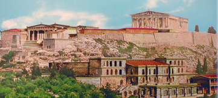
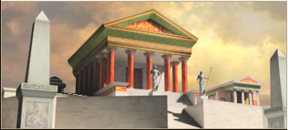
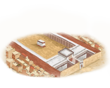

RTR: Imperium Surrectum
RTR: Imperium SurrectumAcropolis of Athens chain
16 levels, each replacing the one before it — you upgrade in place rather than building alongside.
Acropolis of Athens → Capitoline Temple of Jupiter Optimus Maximus → Stonehenge → The Carnac Stones → The Oracle of Delphi → The Oracle of Dodona → Sanctuary of Asklepios → Karahunj → The Temple of Anahita at Ecbatana → Kogaionon → Persepolis → Paradise of Daphne → Pillars of Herakles → The Second Temple of Yahweh at Jerusalem → The Tophet of Carthage → The Oracle of Amon at Siwa
Pictures are the game's own building art. Where a culture ships none of its own, the game falls back to another culture's, and that is what is shown here.
Levels at a glance
| Level | Cost | Build time | Minimum settlement | Upgrades to | Level | Cost | Build time | Minimum settlement | Upgrades to | ||
|---|---|---|---|---|---|---|---|---|---|---|---|
| Acropolis of Athens | 12,000 | 2 | large town | Capitoline Temple of Jupiter Optimus Maximus, Stonehenge, The Carnac Stones, The Oracle of Delphi, The Oracle of Dodona, Sanctuary of Asklepios | Capitoline Temple of Jupiter Optimus Maximus | 10,000 | 2 | large town | — | ||
| Stonehenge | 800 | 2 | large town | — | The Carnac Stones | 800 | 2 | large town | — | ||
| The Oracle of Delphi | 11,000 | 2 | large town | — | The Oracle of Dodona | 8,000 | 2 | large town | — | ||
| Sanctuary of Asklepios | 200 | 2 | large town | — | Karahunj | 3,000 | 2 | large town | — | ||
| The Temple of Anahita at Ecbatana | 6,000 | 2 | large town | — | Kogaionon | 7,500 | 2 | large town | — | ||
| Persepolis | 9,000 | 2 | large town | — | Paradise of Daphne | 800 | 2 | large town | — | ||
| Pillars of Herakles | 800 | 2 | large town | — | The Second Temple of Yahweh at Jerusalem | 9,000 | 2 | large town | — | ||
| The Tophet of Carthage | 10,000 | 2 | large town | — | The Oracle of Amon at Siwa | 800 | 2 | large town | — |
Costs in denarii, build time in turns.
Acropolis of Athens

The Acropolis is a flat-topped rock which rises 150 m above sea level in the city of Athens.The classical Parthenon was constructed between 447-432 BCE to be the focus of the Acropolis building complex. It was dedicated to the goddess Athena Parthenos (Virgin). The temple's main function was to shelter the monumental statue of Athena that was made by Pheidias out of gold and ivory. The temple and the chryselephantine statue were dedicated in 438, although work on the sculptures of its pediment continued until completion in 432 BCE.
In 437 BCE Mnesicles started building the Propylaia, a monumental gateway that served as the entrance to the Acropolis in Athens. South of the Propylaia, building of the small Ionic Temple of Athena Nike commenced. The Temple of Athena Nike was an expression of Athens' ambition to be the leading Greek city state in the Mediterranean region. Between the temple of Athena Nike and the Parthenon there was the sanctuary of Artemis Brauronia, the goddess represented as a bear and worshipped especially in Brauron on the east coast of Attica. She was the goddess of hunting, wild animals and wilderness, and the protectress of girls and women.
The city of Athens was without doubt the most important cultural centre of the Classical Period. Later, during the Hellenistic period, and despite a decrease in its importance due to the advent of new political centres and cultural forces, Athens did not cease to be an important city and an essential centre of considerable artistic radiance. In the new Hellenism that emerged from the expeditions of Alexander the Great, the city occupied a special place for its heritage. While still functioning as a religious centre, the Acropolis, in a sense, became kind of a theatre of memory linking the glory days of Athens with the new powers of the world.
| Cost | 12,000 denarii | Build time | 2 turns | Minimum settlement | large town | Upgrades to | Capitoline Temple of Jupiter Optimus Maximus, Stonehenge, The Carnac Stones, The Oracle of Delphi, The Oracle of Dodona, Sanctuary of Asklepios |
What it does
- +1 public order (law)
- can stage games
Show 4 effects that apply only in the circumstances shown
- +5 public order (happiness) — only when
faction_religion_group_hellenic and not building_present_min_level core_building imperial_palace - +7 public order (happiness) — only when
faction_religion_group_hellenic and building_present_min_level core_building imperial_palace - +3 public order (happiness) — only when
not faction_religion_group_hellenic - +10 taxable income — only when
factions { athens, }
Religious belief — spreads 1 belief, by how much depending on what the region already believes.
- Ionian +5
Stonehenge

The game ships no picture of its own for this level and shows the Awesome Temple picture instead.
This is Stonehenge, the most prominent and enigmatic stone circle of Britannia.
There are more than hundreds stone rings exist in the Britannia. Stonehenge is the most prominent due to its shape is roughly circular. It is difficult to precisely date the stone rings because of the scarcity of datable remains associated with them, but it is known that they were constructed during the Neolithic period. In southern Britannia the Neolithic period dates from the development of the first farming communities around 4000 BC to the development of bronze technology around 2000 BC, when the construction of the megalithic monuments was mostly over. These mean Stonehenge even stand before the coming of the Celts in Britannia. How did Stonehenge build remain mystery since its huge stones are from far away corner of the Isle. Although the Britons regarded Stonehenge as a sacred place, many other civilizations regard it as astronomical observatory for agriculture. But everyone accepts that we don't really know anything about this mysterious stone circle.
Although the British know very little about Stonehenge, it is the pride of Briton.
| Cost | 800 denarii | Build time | 2 turns | Minimum settlement | large town |
No effects are declared for this level.
The Oracle of Dodona

The game ships no picture of its own for this level and shows the Shrine picture instead.
Dodona in Epirus, was a prehistoric oracle devoted to the Greek god Zeus and to the Mother Goddess identified at other sites with Rhea or Gaia, but here called Dione. She was described as "the temple associate" of Zeus at Dodona. The three old prophetesses of the shrine, known collectively as the Peleiades, were her priestesses. In the sacred grove they interpreted the rustling of the oak leaves to determine the correct actions to be taken.
| Cost | 8,000 denarii | Build time | 2 turns | Minimum settlement | large town |
What it does
- can stage games
Show 3 effects that apply only in the circumstances shown
- +4 public order (happiness) — only when
faction_religion_group_hellenic - +2 public order (happiness) — only when
not faction_religion_group_hellenic - +8 taxable income — only when
faction_religion_group_hellenic
Religious belief — spreads 1 belief, by how much depending on what the region already believes.
- Northwest Greek +5
The Temple of Anahita at Ecbatana

The game ships no picture of its own for this level and shows the Temple picture instead.
Anahita, an ancient Iranian cosmological figure associated with fertility, healing and wisdom love and war. Her temple at Ecbatana in Media was one of the most glorious sanctuaries in the known world.
Anahita was an ancient Iranian cosmological figure venerated as the female guardian angel of waters (Ābān), associated with fertility, healing and wisdom. She was associated with the planet Venus and identified with Isthar, the Mesopotamian goddess of love and war. An iconic shrine cult of Aredvi Sura Anahita was introduced in the late Achaemenid times, and her temple at Ecbatana in Media was one of the most glorious sanctuaries in the known world. In the Hellenistic period Anahita was mentioned as the Immaculate Virgin Mother of the Lord Mithra, and called sometimes as the Persian Artemis.
| Cost | 6,000 denarii | Build time | 2 turns | Minimum settlement | large town |
What it does
- +1 population health
Show 3 effects that apply only in the circumstances shown
- +5 public order (happiness) — only when
faction_religion_iranian - +3 public order (happiness) — only when
not faction_religion_iranian - can stage games — only when
faction_religion_iranian
Religious belief — spreads 1 belief, by how much depending on what the region already believes.
- Iranian +5
Kogaionon
The game ships no picture of its own for this level and shows the Shrine picture instead.
Kogaionon was the semi-mythical holy mountain of the Dacians, the place where Zalmoxis, a legendary social and religious reformer, regarded as the only true god by the Thracian Dacians, stayed in an underground cave for three years.
The mythical "secret place" of the Gods and of the High Priesthood, the sancto sanctorum of the Dacians, was the Kogaionon (Kogaion) Mountain. Kogaionon was the semi-mythical holy mountain of the Dacians, the place where Zalmoxis, a legendary social and religious reformer, regarded as the only true god by the Thracian Dacians, stayed in an underground cave for three years. Strabo claims that a river with the same name flowed in the vicinity. The translation of Kogaionon is "sacred mountain", which would be connected to a probable Dacian word kaga meaning "sacred". The Kogaionon Mountain believed to be in area of the Orastie Mountains, also called the Sureanu Mountains, which was the economical, the political and the spiritual center of Dacia as residence of the king, the high priest and the supreme judge.
| Cost | 7,500 denarii | Build time | 2 turns | Minimum settlement | large town |
What it does
- +1 public order (law)
- can stage games
Show 3 effects that apply only in the circumstances shown
- +4 public order (happiness) — only when
faction_religion_group_thracian - +2 public order (happiness) — only when
not faction_religion_group_thracian - +5 taxable income — only when
faction_religion_group_thracian
Religious belief — spreads 1 belief, by how much depending on what the region already believes.
- Thracian +3
Persepolis
The game ships no picture of its own for this level and shows the Temple picture instead.
Once the great capital of the Persian Empire under the Achaemenid dynasty, now Persepolis is a mere shadow of its glorious past.
Persepolis was once the great capital of the Persian Empire under the Achaemenid dynasty, but now it is a mere shadow of its glorious past. The first capital during Cyrus the Great and Cambyses II was Pasargadae until Darius the Great founded another in Persepolis. The wealth of Persia was to be visible in every aspect of its construction.
Darius the Great was responsible for the greatest palace at Persepolis named Apadana, used for the King of Kings' official audiences. Work began in 515 BCE and was completed 30 years later by his son Xerxes I. The second largest building, the Throne Hall or "Hundred-Columns Palace," was started by Xerxes and completed by Artaxerxes I. However, for ruling the empire, a remote place in a difficult alpine region was far from convenient, and the real capitals were Susa, Babylon and Ecbatana.
After Alexander the Great invaded Persia, he stormed the Persian Gates in the Zagros Mountains in 330 BCE, then quickly captured Persepolis before its treasury could be looted. After several months Alexander allowed his troops to loot Persepolis. A fire broke out in Xerxes' eastern palace and spread to the rest of the city - unclear whether a drunken accident or deliberate revenge for the burning of the Acropolis during the Second Hellenic-Persian War.
The city gradually declined over time, but the ruins remained as witness to its ancient glory. The foundations of the second great Persian Empire were later laid here, and Istakhr acquired special importance as the centre of priestly wisdom.
| Cost | 9,000 denarii | Build time | 2 turns | Minimum settlement | large town |
What it does
- +2 public order (law)
Show 2 effects that apply only in the circumstances shown
- +4 public order (happiness) — only when
factions { parni, atropatene, persis, } - +8 taxable income — only when
factions { parni, atropatene, persis, }
Religious belief — spreads 1 belief, by how much depending on what the region already believes.
- Iranian +3
Paradise of Daphne
The game ships no picture of its own for this level and shows the Awesome Temple picture instead.
The beauty and lax morals of Daphne are celebrated all over the western world.
Over 6 kilometres west and beyond the suburb, Heraclea, lay the paradise of Daphne, a park of woods and waters, in the midst of which rose a great temple to the Pythian Apollo, founded by Seleucus I Nicator, and enriched with a cult-statue of the god, as Musagetes, "the Leader of the Muses". The beauty and the lax morals of Daphne were celebrated all over the western world; and indeed Antioch on the Orontes as a whole shared in both these titles to fame. Antioch became the capital and court-city of the western Seleucid Empire under Antiochus I Soter, its counterpart in the east being Seleucia on the Tigris.
| Cost | 800 denarii | Build time | 2 turns | Minimum settlement | large town |
What it does
- +1 population growth
- -1 public order (law)
Show 2 effects that apply only in the circumstances shown
- +4 public order (happiness) — only when
factions { e_hellenistic, w_hellenistic, parni, atropatene, persis, } - +2 public order (happiness) — only when
not factions { e_hellenistic, w_hellenistic, parni, atropatene, persis, }
Religious belief — spreads 1 belief, by how much depending on what the region already believes.
- Macedonian +3
The Second Temple of Yahweh at Jerusalem
The game ships no picture of its own for this level and shows the Awesome Temple picture instead.
The Second Temple was the reconstructed Solomon's Temple in Jerusalem, and it was the centre of Jewish worship, which focused on the sacrifices known as the korbanot. The First Temple was destroyed when the Jews were exiled into Babylonian Captivity, and construction of the Second Temple was completed during the reign of Darius the Great, seventy years after the destruction of the First Temple. The Temple at Jerusalem, thought of as great house of the God of Israel, was a key part of the history of Israel, and a major theme in the storyline of the Hebrew Bible.
| Cost | 9,000 denarii | Build time | 2 turns | Minimum settlement | large town |
What it does
Show 4 effects that apply only in the circumstances shown
- +6 public order (happiness) — only when
faction_religion_judaean - -4 public order (happiness) — only when
not faction_religion_judaean - +3 public order (law) — only when
faction_religion_judaean - +1 public order (law) — only when
not faction_religion_judaean
Religious belief — spreads 1 belief, by how much depending on what the region already believes.
- Judaean +5
Capitoline Temple of Jupiter Optimus Maximus

Temple of Jupiter Optimus Maximus was the great temple on the Capitoline Hill in ancient Rome. It was considered one of the largest and the most beautiful temples in the city and was probably founded on an earlier Etruscan temple of Veiovis. The Temple of Jupiter was dedicated on September 13 in the first year of the Roman Republic, c. 509 BC. It was sacred to the Capitoline Triad consisting of Jupiter and his companion deities, Juno and Minerva. Lucius Tarquinius Priscus vowed to build this temple while battling with the Sabines, and seems to have laid some of its foundations; a large part of the work, however, was done by Lucius Tarquinius Superbus, who is said to have nearly completed it. Tradition also had it that prior to the temple's construction shrines to other gods occupied the site. When the augurs carried out the rites seeking permission to remove them, only Terminus and Iuventas were believed to have refused. Their shrines were therefore incorporated into the new structure. As the god of boundaries, Terminus' refusal to be moved was interpreted as a favorable omen for the future of the Roman state. The man to perform the dedication of the temple was chosen by lot. The duty fell to Marcus Horatius Pulvillus, one of the consuls in that year. The original Temple measured almost 60 metres x 60 metres and was considered the most important religious temple of the whole state of Rome. Each deity of the Triad had a separate cella, with Juno Regina on the left, Minerva on the right, and Jupiter Optimus Maximus in the middle. The temple was decorated with many terra cotta sculptures. The most famous of these was of Jupiter driving a quadriga, a chariot drawn by four horses, which was placed at the peak of the pediment. This sculpture, as well as the cult statue of Jupiter in the main cella, was said to have been the work of Etruscan artisan Vulca of Veii.
| Cost | 10,000 denarii | Build time | 2 turns | Minimum settlement | large town |
What it does
- +2 public order (law)
- can stage games
Show 3 effects that apply only in the circumstances shown
- +4 public order (happiness) — only when
faction_religion_italic and not building_present_min_level core_building imperial_palace - +6 public order (happiness) — only when
faction_religion_italic and building_present_min_level core_building imperial_palace - +3 public order (happiness) — only when
not faction_religion_italic
Religious belief — spreads 1 belief, by how much depending on what the region already believes.
- Italic +5
The Carnac Stones
The game ships no picture of its own for this level and shows the Temple picture instead.
The Carnac stones are an exceptionally dense collection of megalithic sites in Armorica, consisting of alignments, dolmens, tumuli and single menhirs.
The Carnac Stones are an exceptionally dense collection of megalithic sites in Armorica, consisting of alignments, dolmens, tumuli and single menhirs. The more than 3,000 prehistoric standing stones were hewn from local rock and erected by the pre-Celtic people of Brittany, and are the largest such collection in the world. They were erected at some stage during the Neolithic period, probably around 3300 BCE, but some may date to as old as 4500 BCE. Over the centuries they have variously been thought to have been used by Druids for human sacrifice, used as territorial markers or elements of a complex ideological system, or functioned as early calendars.
Some megaliths, dolmen (stone passages) and tumuli (dolmen covered by large mounds) are graves and some single standing stones (menhirs) are associated with graves. But the reason for building the long lines of stones (alignments), the stone circles (cromlechs) and many of the menhirs has been lost in the mists of time. Some people think that they are calendars and observatories, so that ancient farmers knew the seasons and when to plant and harvest their crops and the priests could foretell terrifying phenomena such as eclipses of the sun and moon.
| Cost | 800 denarii | Build time | 2 turns | Minimum settlement | large town |
No effects are declared for this level.
The Oracle of Delphi
The game ships no picture of its own for this level and shows the Shrine picture instead.
Delphi was the site of the Delphic oracle, whose priestess was known as the Pythia, and it was a major site for the worship of the god Apollo. The exterior of his temple was decorated with shields captured from the Persians at Plataea. His sacred precinct in Delphi was a Pan-Hellenic sanctuary, where every four years athletes from all over the Greek world competed in the Pythian Games. Apollo spoke through his oracle, who had to be an older woman of blameless life chosen from among the peasants of the area.
| Cost | 11,000 denarii | Build time | 2 turns | Minimum settlement | large town |
What it does
- can stage games
Show 3 effects that apply only in the circumstances shown
- +5 public order (happiness) — only when
faction_religion_group_hellenic - +4 public order (happiness) — only when
not faction_religion_group_hellenic - +15 taxable income — only when
faction_religion_group_hellenic
Religious belief — spreads 1 belief, by how much depending on what the region already believes.
- Northwest Greek +4
Sanctuary of Asklepios
The game ships no picture of its own for this level and shows the Temple picture instead.
Sanctuary of Asklepios of Epidauros, the largest scared place and hospital in hellenistic world where the sicks gather for healing and cured of their disease by power of Asklepios, god of medicine.
Lying south-west of Epidauros, the Sanctuary of Asklepios comprises 160 sq km in the verdant valley enclosed by Mts. Koryphaion and Kynortion. Here in archaic times the god or hero Malos or Maleatas was worshiped. This cult's relation to Apollo's allowed an early merging of the two. In historic times, Apollo, already the dominant god, took on the surname Maleatas.
Asklepios, the mythical hero-doctor, son of Apollo and Korone, learned medicine from the centaur Chiron. In the last quarter of the 5th c. B.C., the cult of Asklepios enjoyed a sudden upsurge in Epidauros, reaching its peak in the 4th c. B.C. The Pan-Hellenic Games, the Asklepieia, were held every four years, and more than 200 new Asklepieia were built under the patronage of Epidauros. In the 4th c. B.C., the Hellenistic world clung with especial fervor to this philanthropic god, a healing doctor and savior. The sanctuary's enclosure transformed into a place filled with countless offerings and monuments, remarkable examples of 4th c. B.C. Greek art.
Therapy was based on the belief that, since sickness had a psychosomatic origin, the power to restore health was likewise sought within the patient. The therapy of the doctor-priests aimed at rousing an inner power of restoring health - the harmony of soul and body. This therapy was also practiced by the Pythagoreans. Although it sometimes led to superstition, it presented a basis for scientific medicine and proved the importance of psychosomatic factors in health. In the Hellenistic and Roman periods, doctors traced their lineage to Asklepios and called themselves his descendants.
| Cost | 200 denarii | Build time | 2 turns | Minimum settlement | large town |
No effects are declared for this level.
Karahunj
The game ships no picture of its own for this level and shows the Temple picture instead.
The standing stones of Karahunj consist of 40 great stones erected in honor of the Armenian God Ari.
The standing stones of Karahunj (also called Zorats Karer, the most likely translation for which is 'Singing Stones') are situated 200 km south-east of Armavir. It was a temple that consists of 40 stones built in honor of the Armenians' main God, Ari, meaning the Sun, is situated in the central part of Carahunge. Besides the temple, it had a large and developed observatory, and also a university that made up the temple's wings. The structure surrounds a Bronze Age cemetery set on the natural elevation. The site was in use from the Middle Bronze Age into the Iron Age (2nd to 1st millennia BC), and contains some extraordinary chamber tombs. A wall of rocks and loam was built, of which only the vertical rocks remain standing. In the Hellenistic and Roman period, the site was probably used as a fortified place of refuge. It is believed to date back to 7500 BC. Petroglyphs found nearby indicate that early inhabitants of the region had an awareness of the night sky long before the II millennium BC. Karahunj has many legends associated with it.
| Cost | 3,000 denarii | Build time | 2 turns | Minimum settlement | large town |
What it does
- +1 public order (law)
Show 2 effects that apply only in the circumstances shown
- +4 public order (happiness) — only when
faction_religion_armenian - +2 public order (happiness) — only when
not faction_religion_armenian
Religious belief — spreads 1 belief, by how much depending on what the region already believes.
- Armenian +4
Pillars of Herakles
The game ships no picture of its own for this level and shows the Shrine picture instead.
Two mountains of the western most strait mark ending to Mediterranean and beginning of great ocean ahead. Believe to be work of Herakles.
When Herakles had to perform his twelve labours, one of them was to fetch the Cattle of Geryon in Spain and bring it to Eurystheus. On his way to the island of Erytheia he had to cross the mountain that was once Atlas. Instead of climbing the great mountain, he cut corners and put his mind to work. He decided to use his great strength to smash through the colossal mountain that used to be a colossal giant. Herakles split it in half using his indestructible club. By doing so, he connected the Atlantic Ocean to the Mediterranean Sea and formed the Strait with mountains on both side. These mountains taken together have since then been known as the Pillars of Herakles, which are also mentioned at some places as portals, or gates, to different locations on Earth.
Near Gadir was the westernmost temple of Tyrian Herakles (Melqart), near the eastern shore of the island. Strabo notes that the two bronze pillars within the temple, each 8 cubits high, were widely proclaimed to be the true Pillars of Heracles by many who had visited the place and had sacrificed to Herakles there. But Strabo believes the account to be fraudulent, in part noting that the inscriptions on those pillars mentioned nothing about Herakles, speaking only of the expenses incurred by the Phoenicians in their making. The columns of the Melqart temple at Tyre were also of religious significance.
This building complex can be improved as the settlement grows in size and importance.
| Cost | 800 denarii | Build time | 2 turns | Minimum settlement | large town |
No effects are declared for this level.
The Tophet of Carthage

The Carthage Tophet was a sacred sanctuary where people came to make vows and address requests to Baal Hammon and his consort Tanit.
The chief deity of Carthage was Baal Hammon, the community's divine lord and protector, identified by the Greeks with Kronos and by the Romans with Saturn. Tanit was the consort of Baal Hammon, "Lord of the Incense Altar," often given the attribute "face of Baal." The Carthage Tophet was a sacred sanctuary where people made vows and addressed requests to Baal Hammon and Tanit, according to the formula do ut des ("I give in order that you give"). Each vow was accompanied by an offering.
Carthaginian temples were often built raised or walled off in a separate precinct or acropolis. Since the temple was the "house" of the god or goddess, it was also the storehouse for the deity's treasures, so it was built sturdy to protect them. The temple staff included priests, musicians, singers, diviners, scribes and sometimes armed guards. The staff was sustained by proceeds from sacrifices, supplies from temple estates, and contributions from the local people. The essential function was the care of the statue of the god or goddess, offering sacrifices and performing rituals for the good of the people and the state.
Punic children who died young possessed a special status. They were incinerated and buried inside an enclosure reserved for Baal Hammon and Tanit. These children were not "dead" in the usual sense - they were retroceded. For mysterious reasons, Baal Hammon decided to recall them to himself. Submitting to divine will, the parents returned the child according to a ritual involving incineration and burial. In return, they hoped the gods would provide a replacement, and this request was inscribed on a funeral stele. In many cases, the Carthaginians used lambs or kid goats as replacement sacrifice.
| Cost | 10,000 denarii | Build time | 2 turns | Minimum settlement | large town |
What it does
- can stage games
Show 3 effects that apply only in the circumstances shown
- +6 public order (happiness) — only when
faction_religion_phoenician - +2 public order (happiness) — only when
not faction_religion_phoenician - +10 taxable income — only when
faction_religion_phoenician
Religious belief — spreads 1 belief, by how much depending on what the region already believes.
- Phoenician +6
The Oracle of Amon at Siwa
The game ships no picture of its own for this level and shows the Shrine picture instead.
The so-called Libyan Sibyl was identified with prophetic priestess presiding over the ancient Zeus Amon (Zeus represented with the horns of Amon) oracle at the Siwa Oasis in the Western Desert of Egypt. Such was its reputation among the Greeks that Alexander the Great journeyed there after the battle of Issus and during his occupation of Egypt in order to be acknowledged as the legal ruler of the country. Amon was a leading sun god among the ancient Egyptians, Libyans, Nubians, and the Greeks of Cyrenaica, and the patron deity of Thebes.
This building complex can be improved as the settlement grows in size and importance.
| Cost | 800 denarii | Build time | 2 turns | Minimum settlement | large town |
No effects are declared for this level.
What the shorthands in those conditions stand for (7)
These are the mod's own, quoted from the game files unchanged.
| Shorthand | Stands for | Shorthand | Stands for | Shorthand | Stands for | Shorthand | Stands for |
|---|---|---|---|---|---|---|---|
faction_religion_armenian | factions { armenia, armenia_minor, sophene, commagene, } | faction_religion_group_hellenic | any one of 1 alternatives — too long to quote here | faction_religion_group_thracian | factions { bithynia, paeonia, asti, dentheletae, getae, cabyle, maedi, odrysians, bessi, costoboci, buri, crobyzi, tyragetae, triballi, } | faction_religion_iranian | factions { atropatene, parni, osrhoene, persis, } |
faction_religion_italic | factions { roman, volsinii, picentes, sarsinates, capua, samnites, lucanians, messapians, bruttians, italics, mamertines, sardinians, romans_julii, roman_rebels_1, roman_rebels_2, roman_senate, } | faction_religion_judaean | factions { hasmonean, } | faction_religion_phoenician | factions { carthage, arados, tyre, gades, sidon, } |